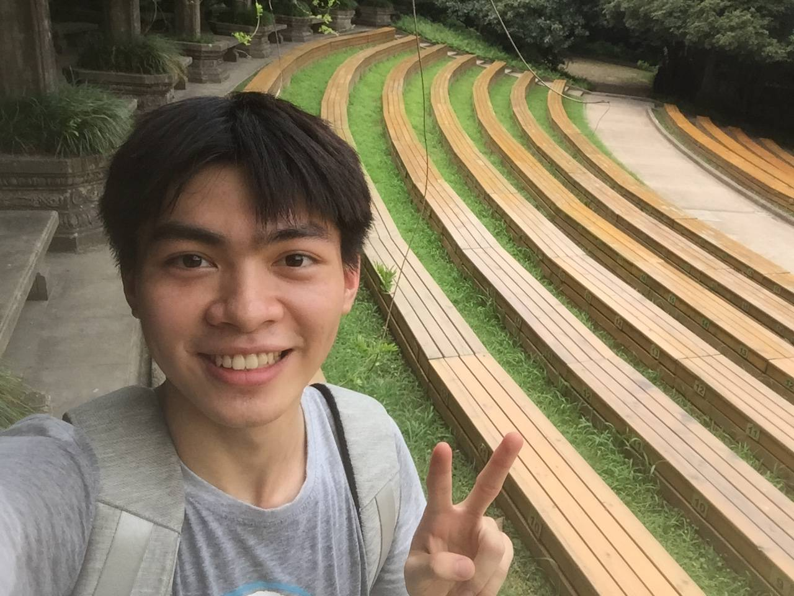

Kunchang Li
Ph.D. studentMMLab@SIAT, UCAS Email: kc.li[at]siat.ac.cn 🙏 I'm actively pursuing career opportunities in multimodal video understanding and generation. Feel free to reach out for potential collaborations. |
 |


Biography [CV]
I am a 4th-year Ph.D. student at Shenzhen Institute of Advanced Technology, Chinese Academy of Sciences (SIAT). My advisors are Yu Qiao and Yali Wang. I received the B.S. degree from the Software School, Beihang University in 2020. Currently, I am a Reseach Intern at OpenGVLab, Shanghai AI Laboratory. I was fortunte to be involved in internship program at SenseTime and Megvii.
I am interested in video understanding, efficient architecture, multi-modality learning and generative AI. Most of my research is about video foundation model, including model design, large-scale pretraining, dataset collection and benchamrk evaluation.
Research
* refers to the co-first authors. Representative papers are highlighted.All my works are open-sourced on GitHub, and the full paper list can be found on Google Scholar.
-
InternVideo2: Scaling Foundation Models for Multimodal Video Understanding
Yi Wang*, Kunchang Li*, Xinhao Li*, Jiashuo Yu*, Yinan He*, Guo Chen, Baoqi Pei, Rongkun Zheng, Jilan Xu, Zun Wang, Yansong Shi, Tianxiang Jiang, Songze Li, Hongjie Zhang, Yifei Huang, Yu Qiao, Yali Wang, Limin Wang.
European Conference on Computer Vision (ECCV), 2024. -
VideoMamba: State Space Model for Efficient Video Understanding
Kunchang Li, Xinhao Li, Yi Wang, Yinan He, Yali Wang, Limin Wang, Yu Qiao.
European Conference on Computer Vision (ECCV), 2024. -
MVBench: A Comprehensive Multi-modal Video Understanding Benchmark
Kunchang Li, Yali Wang, Yinan He, Yizhuo Li, Yi Wang, Yi Liu, Zun Wang, Jilan Xu, Guo Chen, Ping Luo, Limin Wang, Yu Qiao.
Computer Vision and Pattern Recognition (CVPR), 2024. (Highlight, Top 3%)[Paper] [Code] [Demo] [Dataset] [Benchamrk] [Leaderboard] [Video] [Blog]
-
Vlogger: Make Your Dream A Vlog
Shaobin Zhuang, Kunchang Li, Xinyuan Chen, Yaohui Wang, Ziwei Liu, Yu Qiao, Yali Wang.
Computer Vision and Pattern Recognition (CVPR), 2024. -
InternVid: A Large-scale Video-Text Dataset for Multimodal Understanding and Generation.
Yi Wang*, Yinan He*, Yizhuo Li*, Kunchang Li, Jiashuo Yu, Xin Ma, Xinhao Li, Guo Chen, Xinyuan Chen, Yaohui Wang, Conghui He, Ping Luo, Ziwei Liu, Yali Wang, Limin Wang, Yu Qiao.
International Conference on Learning Representations (ICLR), 2024. (Spotlght, Top 6%) -
UniFormer: Unifying Convolution and Self-attention for Visual Recognition
Kunchang Li*, Yali Wang*, Junhao Zhang, Peng Gao, Guanglu Song, Yu Liu, Hongsheng Li, Yu Qiao.
IEEE Transactions on Pattern Analysis and Machine Intelligence (TPAMI), 2023. -
VideoChat: Chat-Centric Video Understanding
Kunchang Li*, Yinan He*, Yi Wang*, Yizhuo Li, Wenhai Wang, Ping Luo, Yali Wang, Limin Wang, Yu Qiao.
Arxiv, 2023. -
Unmasked Teacher: Towards Training-Efficient Video Foundation Models
Kunchang Li, Yali Wang, Yizhuo Li, Yi Wang, Yinan He, Limin Wang, Yu Qiao.
International Conference on Computer Vision (ICCV), 2023. (Oral, Top 2%) -
UniFormerV2: Unlocking the Potential of Image ViTs for Video Understanding
Kunchang Li, Yali Wang, Yinan He, Yizhuo Li, Yi Wang, Limin Wang, Yu Qiao.
International Conference on Computer Vision (ICCV), 2023. -
InternVideo: General Video Foundation Models via Generative and Discriminative Learning.
Yi Wang*, Kunchang Li*, Yizhuo Li*, Yinan He*, Bingkun Huang*, Zhiyu Zhao*, Hongjie Zhang*, Jilan Xu, Yi Liu, Zun Wang, Sen Xing, Guo Chen, Junting Pan, Jiashuo Yu, Yali Wang, Limin Wang, Yu Qiao.
Arxiv, 2022. -
You Only Need 90K Parameters to Adapt Light
Ziteng Cui, Kunchang Li, Lin Gu, Shenghan Su, Peng Gao, Zhengkai Jiang, Yu Qiao, Tatsuya Harada.
The British Machine Vision Conference (BMVC), 2022. -
PointCLIP: Point Cloud Understanding by CLIP
Renrui Zhang, Ziyu Guo, Wei Zhang, Kunchang Li, Xupeng Miao, Bin Cui, Yu Qiao, Peng Gao, Hongsheng Li.
Computer Vision and Pattern Recognition (CVPR), 2022. -
MorphMLP: An Efficient MLP-Like Backbone for Spatial-Temporal Representation Learning
David Junhao Zhang*, Kunchang Li*, Yali Wang, Yunpeng Chen, Shashwat Chandra, Yu Qiao, Luoqi Liu, Mike Zheng Shou.
European Conference on Computer Vision (ECCV), 2022. -
Self-slimmed Vision Transformer
Zhuofan Zong*, Kunchang Li*, Guanglu Song, Yali Wang, Yu Qiao, Biao Leng, Yu Liu.
European Conference on Computer Vision (ECCV), 2022. -
Tip-Adapter: Training-free CLIP-Adapter for Better Vision-Language Modeling
Renrui Zhang*, Rongyao Fang*, Wei Zhang*, Peng Gao, Kunchang Li, Jifeng Dai, Yu Qiao, Hongsheng Li.
European Conference on Computer Vision (ECCV), 2022. -
UniFormer: Unified Transformer for Efficient Spatiotemporal Representation Learning
Kunchang Li*, Yali Wang*, Junhao Zhang, Peng Gao, Guanglu Song, Yu Liu, Hongsheng Li, Yu Qiao.
International Conference on Learning Representations (ICLR), 2022. (Top 3% of review scores) -
CT-Net: Channel Tensorization Network for Video Classification
Kunchang Li*, Xianhang Li*, Yali Wang*, Jun Wang, Yu Qiao.
International Conference on Learning Representations (ICLR), 2021.
Internships
-
OpenGVLab, Shanghai AI Lab, Shanghai, ChinaNov. 2021 – Present
Research Intern
Advisor: Yali Wang, Limin Wang, Yi Wang
Topic: General Video Foundation Model; Large-scale Pre-training; Multimodal Learning
-
X-Lab, SenseTime, Beijing, ChinaFeb. 2021 – Nov. 2021
Research Intern
Advisor: Guanglu Song, Yu Liu
Topic: Efficient Architecture Design; Video Understanding
-
Megvii, Beijing, ChinaOct. 2019 – Jan. 2020
Research Intern
Topic: Model Reproduction for MegEngine
Honors
-
Top 10 Outstanding Graduate Students in SIAT, UCAS2023
-
National award scholarship2023
-
Dean Scholarship of University of Chinese Academy of Sciences2022, 2023
-
Merit Student at University of Chinese Academy of Sciences2021, 2022
-
1st Place in Forecasting Challenge (ECCV2022 Ego4D Workshop)2022
-
2nd Place in Action Recognition in the Dark Challenge (CVPR2022 UG2+ Workshop)2022
-
1st Place in Semantic Segmentation of Remote Sensing Images (CCF BDCI Contest)2021
-
Comprehensive Grand Prize of CCF BDCI Contest2021
-
Excellent Higher Education Graduate of Beijing Municipality2020
-
Grand Prize of Social Work Scholarship, Grand Prize of Study Excellence Scholarship,
Merit Student and Honor student at Beihang University2017, 2018, 2019
Services
- Conference Reviewer: ICLR2023/2024, CVPR2023/2024, ICCV2023, NeurIPS2023/2024, ICML2024, ECCV2024
- Conference PC: AAAI2025
- Journal Reviewer: TPAMI, IJCV, PR, NN, JVCI
- Talk: AI Drive 2022, AI Time 2022, AI Time 2023, others (FDU, UCAS, KAUST...)